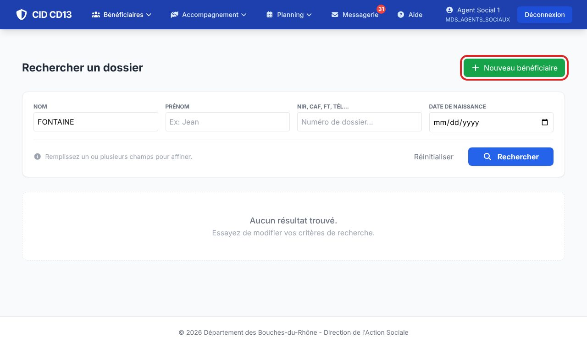
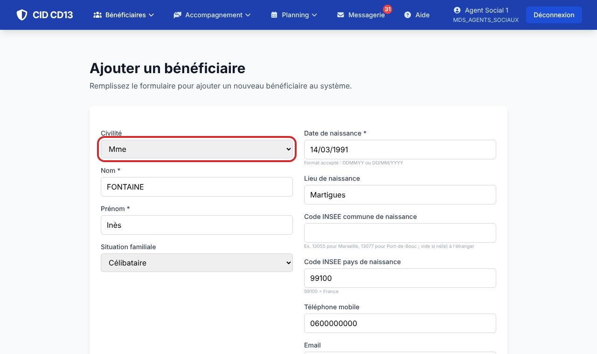
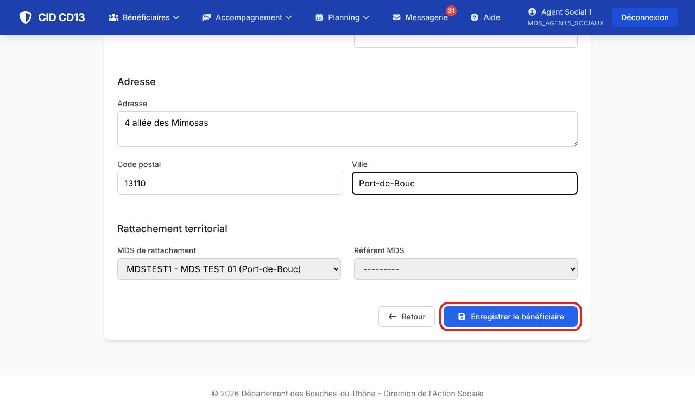
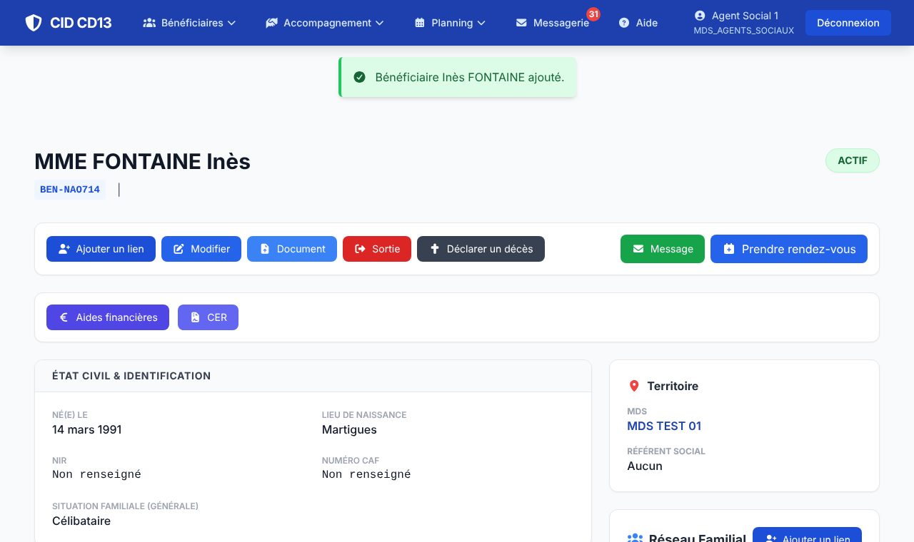

Avant de commencer
- Cherchez la personne : si elle existe déjà, ne la recréez pas.
1Ouvrir le formulaire

- Après une recherche sans résultat, cliquez sur + Nouveau bénéficiaire.
- Autre chemin : menu Bénéficiaires → Ajouter un usager.
2Remplir l'identité et l'adresse


- Les champs marqués d'une * sont obligatoires : civilité, nom, prénom, date de naissance, adresse, code postal, ville, MDS de rattachement.
- Date de naissance : 14/03/1991, ou plus vite 140391.
- Code postal : CID propose la commune correspondante.
- Le référent MDS est facultatif : il peut être choisi plus tard.
- Cliquez sur Enregistrer le bénéficiaire.
3Vérifier la fiche créée

- Un message vert confirme la création.
- CID a attribué un code interne, affiché sous le nom (ici
BEN-NAO714). - Les boutons du haut servent ensuite au quotidien : Ajouter un lien, Modifier, Document, Message, Prendre rendez-vous, puis Aides financières et CER.
Bon à savoir
- Les numéros (NIR, CAF, France Travail…) se complètent ensuite avec Modifier.
- Les enfants et le conjoint se créent depuis la fiche, avec Ajouter un membre de la famille : ils reprennent alors l'adresse et la MDS.
Et ensuite ?
Cliquez sur une image pour l'agrandir. Le cadre rouge montre où cliquer ou quoi remplir. Toutes les données affichées sont fictives.